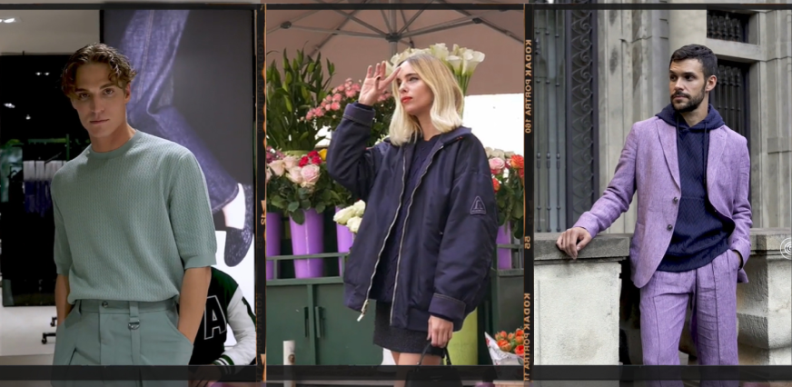

Новая коллекция модного дома Вязань
Утончённая и современная коллекция шерстяной одежды от нового дизайнера дома Вязань — Александра Кирова. Одежда изготовлена из овечьей шерсти премиального качества, которую Вязань производит на собственной ферме в Кабардино-Балкарской Республике.
